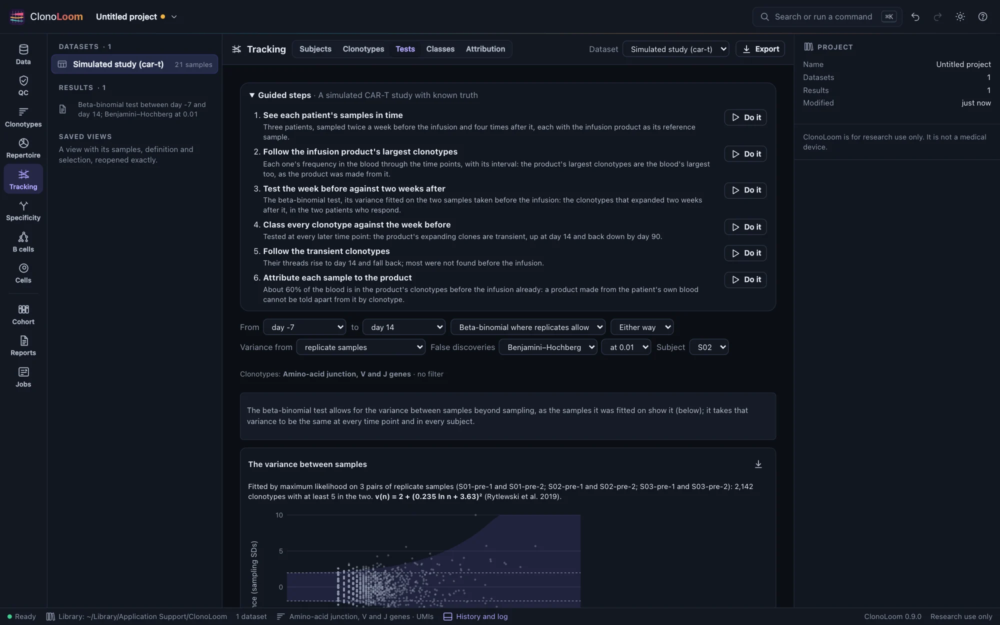
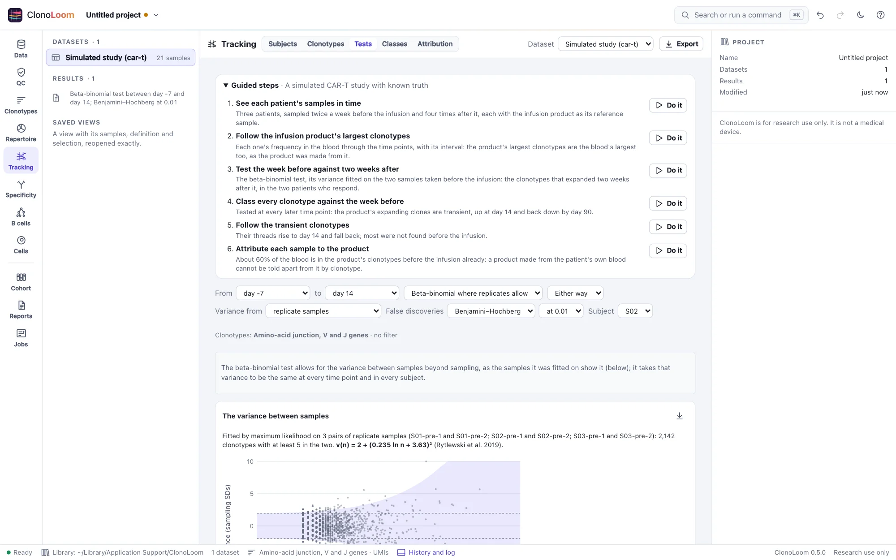

Expanded and contracted clonotypes
The Tracking view's Tests part tests each clonotype between two time points of each subject, calls those that increased or decreased with the false discovery rate controlled, and shows them at their two frequencies.
Choose what to compare


Give the samples their subjects and time points first (Subjects and time points). Then open Tracking › Tests and choose:
- From and to: two time points. Every subject with samples at both is compared, and the view names those without. Samples taken at one time are pooled. The reference sample (an infusion product, a donor) can be one of the two.
- The test: the beta-binomial test where the study has samples to fit its variance on (the default; Rytlewski et al. 2019), else the binomial test; or, chosen, the beta-binomial test, the binomial test or Fisher's exact test (DeWitt et al. 2015). All ask whether a clonotype's count at the first time point, given its total at the two, is what the two samples' depths would make it. The binomial and Fisher's tests allow for sampling alone; the beta-binomial test also for the variation between samples of one repertoire.
- Variance from (the beta-binomial test): the study's replicate samples, two of one subject taken at one time (the default), or two time points named stable, between which nothing is taken to change.
- The direction: either way (two-sided, the default), or only increases or only decreases.
- False discoveries: controlled within each subject by Benjamini and Hochberg's procedure (the default) or Storey's q-values (π₀ estimated at λ = 0.5), at 0.01 (the default), 0.05 or 0.1.
Clonotypes with fewer than 5 cells or molecules in the two samples together are not tested, nor counted among the tests. The choice is kept with the dataset, and each result with the project.
Reading the result
- Each subject's summary: the two time points and their depths, how many clonotypes were tested and left out, and how many were called increased and decreased.
- The plot: each clonotype tested at its frequency at the two time points, on logarithmic axes, the line of no change dashed. A clonotype not found at one of them sits on that axis's own lane. The calls are colored. Choose one, on the plot or in the table, to ring it.
- The table: the calls, the most significant first, with their counts, frequencies, the log₂ of their ratio, the p-value and the adjusted p-value. A row's button shows the clonotype in the Clonotypes view.
- Follow the calls follows each subject's 20 most significant calls through every time point, in the Clonotypes part (Following clonotypes).
The variance between samples
Two blood samples taken at one time differ by more than sampling. The beta-binomial test allows for that, as Rytlewski et al. 2019 proposed: a clonotype's count at the first time point, given its total n at the two, varies around its expectation with a scale v(n) = 2 + (b ln n + a)², fitted by maximum likelihood on clonotypes of samples that should not differ.
- The variance card shows the fit: each clonotype of those samples at its total and its difference between them, in sampling's standard deviations, with sampling's 95% band and the model's. It says how many of them a test at 0.05 calls changed by sampling alone, and with the model: about 5% or fewer where the model holds.
- The model is fitted once for the study, on every subject's replicate samples, and taken to hold at every time point and in every subject. Fitted on two time points named stable, it takes nothing to have changed between them.
- Without replicate samples or a stable pair, the binomial test is used, and the view says so.
What the tests account for
On simulated studies whose truth is known:
- On a series in which nothing changes, no test called any of 6,634 clonotypes when samples differed only by sampling. With variation between blood samples, the binomial and Fisher's tests called 13 of 6,599 (0.2%, as Rytlewski et al. found between blood samples two weeks apart); the beta-binomial test, none.
- On the CAR-T study, with its variation between blood samples, 6 of the binomial test's 73 calls were against the truth (8%, against the 1% asked for); none of the beta-binomial test's 20. Allowing for the variation, it calls fewer of the clonotypes that did change.
The tests refuse counts of reads, which count each cell or molecule many times over.
Using the result
The plot saves as a figure. Export writes every clonotype tested, with its counts, p-value, adjusted p-value and call, and each subject's comparison in sum, as CSV. The methods paragraph says what was compared, how, and what was called. Scripts use test_expansion (Remote control).